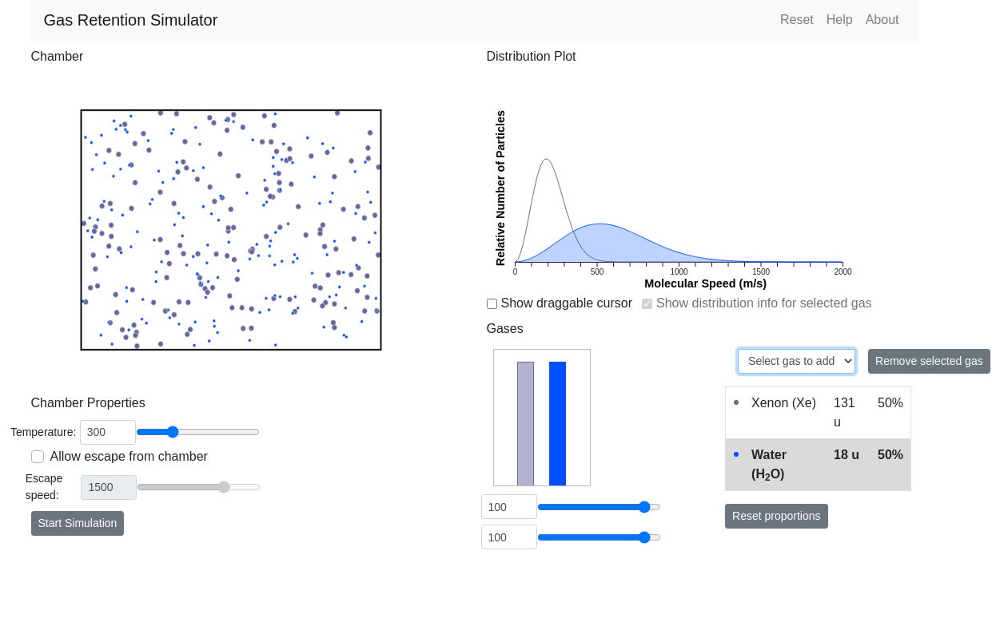
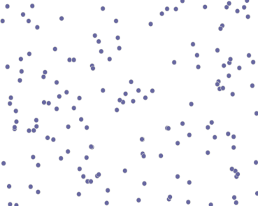

I want to summarize part of the Gas Retention Simulator we've made as part of our effort to re-work Kevin Lee's astronomy simulations. The goal here has been to port these simulations from Flash to HTML/JavaScript, now that Flash is not being used anymore and JavaScript can do everything Flash used to do.
This simulation includes a view of gas particles flying around in a chamber. They bump into each other, bump off the walls of the chamber, and can escape the chamber as configured by the user.
I've taken courses in computational physics before, so I know how complicated making these calculations yourself can be. I knew I wanted to take advantage of some sort of Physics engine so the particles move in a realistic way.
I chose to use Matter.js because many other people use this library, and it looks like it would provide everything I need to put together this scene.
The typical Matter.js scene displays objects pulled to the bottom of the screen with gravity. I needed a different type of scene where gravity doesn't come into play, but we still get physical movement as the particles bounce around. You can turn gravity off in the scene like this:
const engine = Engine.create(); engine.world.gravity.y = 0;
Now, we need to turn friction off when we create the particles, and give them infinite inertia:
const particleOptions = {
restitution: 1,
friction: 0,
frictionAir: 0
};
const particle = Matter.Bodies.circle(
// initial particle position
Math.random() * sceneWidth,
Math.random() * sceneHeight,
particleSize,
particleOptions
);
Matter.Body.setInertia(particle, Infinity);
Run this about 100 times in a loop, and at this stage in the process we have a bunch of particles at random positions. Because we turned off gravity, they're not going anywhere.
To make them move, we give them each a random direction, and set their velocity based on that direction.
// Find a random direction, in radians
const direction = Math.random() * Math.PI * 2;
Matter.Body.setVelocity(p, {
x: Math.sin(direction) * PARTICLE_SPEED,
y: Math.cos(direction) * PARTICLE_SPEED
});
You'll also need to add some walls around the scene to contain these particles. These are created by making four Matter.Bodies with the isStatic: true setting. Now you should have them moving around like this:
So, why are the particles getting stuck to the walls, and eventually losing speed? Even though we've turned off friction and set the particles to have infinite inertia, they're still losing energy as they collide.
We found this post in the matter.js forum that talks about this issue. It includes a solution to this problem by periodically re-introducing energy to each body according to how much energy was lost. We were able to adapt this code to our scenario, where each particle has its own unique speed assigned to it based on the Maxwell-Boltzmann Distribution function.
const adjustE = function(p) {
const baseSpeed = p.molecularSpeed * PARTICLE_SPEED;
if (p.speed !== 0) {
let speedMultiplier = baseSpeed / p.speed;
Matter.Body.setVelocity(
p, {
x: p.velocity.x * speedMultiplier,
y: p.velocity.y * speedMultiplier
}
);
}
};
// Run adjustE on each particle every 500 milliseconds.
let counter = 0;
Matter.Events.on(engine, 'beforeUpdate', function(e) {
if (e.timestamp >= counter + 500) {
me.particles.forEach(function(p) {
adjustE(p);
});
counter = e.timestamp;
}
});
And now, the slowdown is fixed and the particles move like we want them to:
This demo above is a simplified version of the full Gas Retention sim. The demo code is here, which is the bare minimum to get this scenario running in Matter.js. It doesn't include the rest of the simulation all connected in React. You can see the real code here, with the Matter.js section in Chamber.jsx.